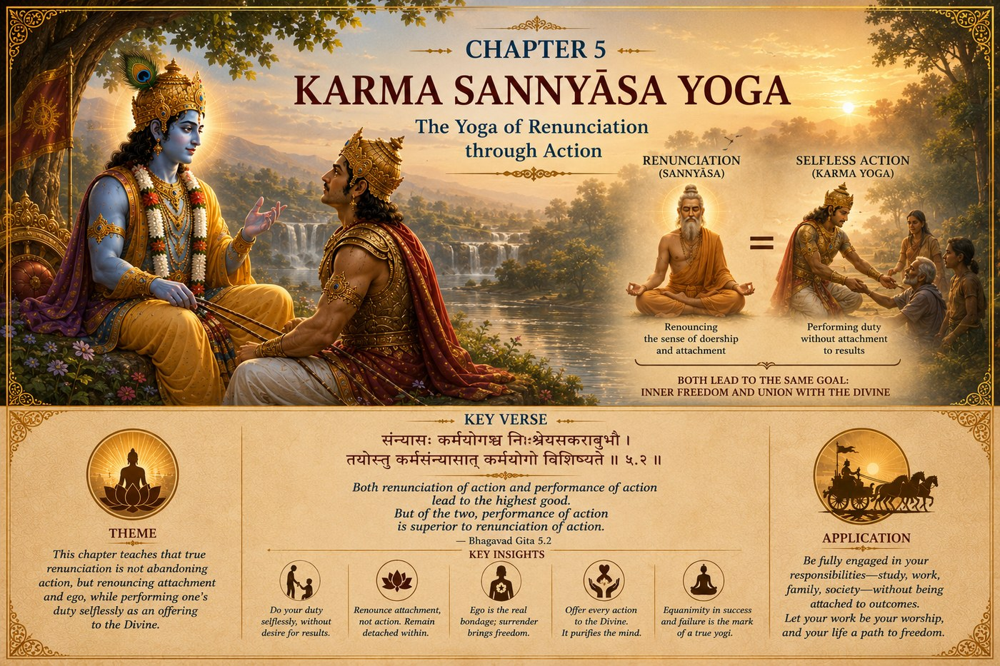

The GITA Project › Week 5 · Chapter 5

Week 5 · Chapter 5 — Karma Sannyāsa Yoga: The Yoga of Renunciation through Selfless Action
Student Theme — Renunciation Is More Than Walking Away
Every life has moments where……we discover that true peace does not come from escaping our responsibilities, but from changing the way we carry them.
Many people believe that peace is found when life becomes easier. “When exams are over, I'll be happy.” “When I get into the college I want, I'll finally relax.” “When people stop expecting so much from me, life will be peaceful.” Yet every stage of life brings new responsibilities. If peace depends upon having no responsibilities, we may spend our entire lives waiting for a peace that never comes. Chapter Five invites us to discover a different truth: peace is not found by avoiding life. Peace is found by learning how to live wisely within it.
One question — Is peace something that arrives when life finally settles down, or something we carry into a life that never fully settles?
A moment you may know — You promise yourself you'll relax “after this one thing” — but the next thing is always waiting, and the calm never quite arrives.
This chapter's promise — You will discover that renunciation is more than walking away, and that it is possible to remain deeply involved in life while keeping a steady, peaceful heart.
Should we walk away, or stay and act?
Arjuna has listened carefully to Lord Shri Krishna's teachings on knowledge and action. Yet one important question remains. Some teachings seem to praise renunciation; others encourage action. Which path is better? Should a person leave behind worldly responsibilities in search of spiritual growth? Or should one remain fully engaged in life while living according to Dharma?
Lord Shri Krishna's answer reveals one of the most practical lessons in the Bhagavad Gita. The problem is not action. The problem is attachment. It is possible to remain deeply involved in life while maintaining inner peace.
Understanding the SituationImagine carrying a heavy backpack. The backpack represents your responsibilities — school, family, friendships, activities, community, goals. Now imagine carrying the same backpack while constantly worrying about what everyone thinks of you: comparing yourself with others, fearing failure, seeking approval, holding onto anger. Suddenly the weight feels much heavier. The responsibilities have not changed. What changed is what you carried inside.
Lord Shri Krishna teaches that many of the burdens we experience do not come from responsibility itself. They come from attachment, worry, pride, fear, and the constant desire to control outcomes. When these attachments begin to fall away, our responsibilities remain — but our hearts become lighter.
The Court of Dharma™Six steps into the meaning of renunciation
- One Situation
- Arjuna wonders whether withdrawing from action or remaining engaged in the world is the better path.
- One Dilemma
- Can a person live a peaceful life while fulfilling everyday responsibilities?
- One Question
- How can I find peace without running away from life's challenges?
- One Conversation
- Lord Shri Krishna explains that true renunciation is not abandoning work — it is abandoning selfish attachment. A person who performs responsibilities according to Dharma, without selfishness or ego, lives with greater freedom than someone who simply walks away. Inner peace is not determined by where we live; it is shaped by how we think. When our actions are offered sincerely, without constant attachment to praise, recognition, or personal gain, the mind gradually becomes calm.
- One Virtue
- Inner Peace — not the absence of activity, but the presence of balance; a heart that stays steady through both success and disappointment.
- One Life Practice
- Take one activity you usually rush through and do it this week with full, grateful attention. (Full practice below.)
Two verses on peace through selfless action
Verse 1 — Untouched like a lotus leaf · 5.10
ब्रह्मण्याधाय कर्माणि सङ्गं त्यक्त्वा करोति य: ।
लिप्यते न स पापेन पद्मपत्रमिवाम्भसा ॥
brahmaṇyādhāya karmāṇi saṅgaṁ tyaktvā karoti yaḥ
lipyate na sa pāpena padma-patram ivāmbhasā
“He who acteth, placing all actions in the Eternal, abandoning attachment, is unaffected by sin as a lotus leaf by the waters.”
— Bhagavad Gita 5.10 · trans. Annie Besant (1922), public domain — via Wikisource
Words to Remember — brahmaṇi ādhāya dedicating to God · karmāṇi actions · saṅgaṁ tyaktvā abandoning attachment · padma-patram lotus leaf.
In plain words. A lotus grows in muddy water, yet its leaf stays dry — the water rolls right off. Krishna offers this as an image for how to live: fully rooted in the world, doing real work, yet not stained by selfish craving for the results. It is not the action that clings to us; it is the attachment.
Reflect: What would it look like to give something your full effort without needing it to make you look good?
Verse 2 — Where lasting peace comes from · 5.12
युक्त: कर्मफलं त्यक्त्वा शान्तिमाप्नोति नैष्ठिकीम् ।
अयुक्त: कामकारेण फले सक्तो निबध्यते ॥
yuktaḥ karma-phalaṁ tyaktvā śhāntim āpnoti naiṣhṭhikīm
ayuktaḥ kāma-kāreṇa phale sakto nibadhyate
“The harmonised man, having abandoned the fruit of action, attaineth to the eternal Peace; the non-harmonised, impelled by desire, attached to fruit, are bound.”
— Bhagavad Gita 5.12 · trans. Annie Besant (1922), public domain — via Wikisource
Words to Remember — karma-phalaṁ tyaktvā letting go of the fruits · śhānti peace · naiṣhṭhikī lasting, firm · sakta attached, entangled.
In plain words. This verse names the difference between two people doing the very same work. One offers the results and finds a peace that lasts. The other, gripping tightly to how things must turn out, gets tangled up in worry. Notice: both are acting. The peace is not in doing less — it is in holding the outcome more lightly.
Reflect: Think of a time you gripped an outcome so tightly it stole your calm. What might loosening that grip have changed?
Together these verses point to the heart of Chapter Five: renunciation is not the same as retreat. To renounce, in Krishna's sense, is to let go of selfish attachment while still doing your duty fully — like a lotus leaf that lives on the water without being soaked by it.
Rooted in the Bhagavad GitaChapter Five teaches that both knowledge and action ultimately lead toward the same goal when they are rooted in Dharma. Lord Shri Krishna explains that true renunciation is an inner transformation rather than an outward appearance. One may live in a busy household, attend school, pursue a career, serve family and society, and still cultivate deep inner peace. Conversely, one may withdraw from responsibilities while remaining filled with attachment, pride, or restlessness. The Bhagavad Gita reminds us that peace is not determined by where we are. It is shaped by how we understand and live according to Dharma.
Dharma LensIs stepping back renunciation — or is it running away?
If renunciation means letting go of attachment rather than letting go of responsibility, then a hard question follows: how do we tell the difference between wisely releasing an outcome and simply quitting when things get uncomfortable?
A situation without an obvious answer
Meera has poured months into leading her school's science fair team. Lately it has consumed her — she snaps at friends, loses sleep, and ties her whole sense of worth to winning. A teacher gently tells her, “Maybe you need to let go a little.” Meera hears two voices. One says: this is the attachment Chapter Five warns about — release the need to win, protect your peace, step back. The other says: your teammates are counting on you; walking back now, right before the fair, would be abandoning a real responsibility, and calling it “inner peace” would just be an excuse.
Is the peaceful choice to loosen her grip on the result while still showing up fully — or has “letting go” quietly become a way to avoid a duty that has simply gotten hard?
The Gita does not hand Meera a formula. Krishna's teaching is not “care less,” and it is not “grind harder.” It is subtler: keep doing your duty, but offer the result and drop the selfish grip on winning. A thoughtful person might read Meera's moment in more than one way — and the honest test is her motive. Is she releasing the craving for applause while staying loyal to her team, or is she releasing the responsibility itself because it hurts? Renunciation is more than walking away; sometimes the more peaceful and more dharmic choice is to stay, and to stay differently.
Character in Practice · Inner PeaceWhat it means. Inner peace is not the absence of activity — it is the presence of balance. It is learning to remain steady during both success and disappointment, so that not every circumstance decides how we feel.
What it does not mean. Being passive, not caring, or withdrawing from responsibility. A peaceful person is not someone without responsibilities — it is someone whose heart stays centered while fulfilling them.
In daily life. Doing your best on a test and then genuinely releasing the outcome; staying kind when a plan falls apart; serving without needing to be thanked for it.
How it's misread. As detachment that looks like indifference. Real inner peace is warm and fully engaged — it simply is not ruled by fear, comparison, or ego.
Recognizing progress — without self-righteousness. You notice praise and criticism moving you less. Pair inner peace with responsibility, so that calm never becomes an excuse to disengage.
The grade you refresh a hundred times, as if watching will change it. The group project where you did the quiet, unglamorous work and no one noticed. The comparison that hijacks a perfectly good day the moment you open your phone. Chapter Five gently suggests: you do not have to abandon any of these responsibilities to find peace. You have to change what you carry inside them — trading the tight grip of “I must control how this turns out” for the steadier posture of “I will do this well, and offer the rest.”
Leadership LabImagine you are helping organize a community event. Many volunteers are working hard. Some receive recognition; others quietly do important work behind the scenes. At the end of the event, no one publicly thanks you. How do you feel? Would your willingness to serve change because your effort went unnoticed?
Lord Shri Krishna teaches that the value of an action is not measured by the applause it receives. Its true value lies in the sincerity, integrity, and selflessness with which it is performed. The strongest leaders are often those whose greatest contributions are made quietly.
Discussion Circle- ObserveIn verse 5.10, what image does Krishna use for a person who acts without attachment? What does that image suggest about being in the world?
- InterpretVerse 5.12 describes two people doing the same work with very different results. What exactly separates the one who finds peace from the one who becomes “entangled”?
- ConnectDescribe a responsibility that felt heavier because of what you were carrying inside — worry, comparison, or the need for approval — rather than the task itself.
- Ethical tensionReturn to Meera. How would you tell the difference between her wisely letting go of the need to win and simply abandoning a duty that got hard?
- ApplyWhat is one activity this week you could do with full attention, offering the result instead of gripping it?
- ChallengeSomeone says, “Detachment just means you've stopped caring.” Using this chapter, respond in a way that is fair both to caring and to peace.
Purpose: to experience how peace grows when attention replaces anxiety, and to feel the difference between rushing an action and offering it. Time: 15–20 min on one chosen activity, most days this week · Format: individual, reflected on in class · Materials: journal, one ordinary daily task.
- Choose one activity you usually rush through — homework, helping at home, practising an instrument, cleaning your room, preparing for school.
- This week, complete that activity with full attention. Do it carefully. Do it gratefully. Do it without complaining.
- As you work, notice when your mind jumps ahead to the result or to what others will think. Gently bring your attention back to the task itself.
- When you finish, write in your journal: How did slowing down change the experience? Did focusing on the work itself make you feel calmer? What distracted your mind?
- At week's end, look back: notice how peace often grows when attention replaces anxiety.
The Offered-Outcome Practice
Pick one thing you're anxious about this week — a test, a tryout, a conversation. Prepare for it fully and honestly. Then, just before it happens, silently release your grip on the result: “I will do my part; the outcome I offer.”
Notice how it feels to work hard and hold the result lightly. This is the lotus leaf — engaged in the water, but not soaked by it.
1. Personal. Think of something that often causes you stress. Is the stress coming from the responsibility itself — or from your expectations, comparisons, worries, or fear of failure?
2. Dharma. Where in your life could you keep doing your duty fully while holding the outcome more lightly?
3. Character. When have you served or worked without being noticed? How did it feel, and would you do it again?
4. Action commitment. The one activity I will do with full attention this week, and when:
5. A private question (you never have to share this): Is there an outcome you are gripping so tightly that it has quietly become the thing controlling your peace?
For a parent or guardian — please listen more than you speak. This is a conversation, not a quiz.
1. Where in your own life did you learn that peace comes from how you carry things, not from having fewer things to carry?
2. Is there a time you worked hard on something without recognition? What kept you going?
3. When life feels overwhelming, what helps you stay steady inside?
Teacher Note — Chapter 5
Objective: students can explain that renunciation in the Gita means releasing selfish attachment (not abandoning duty), and can describe inner peace as balance maintained while fully engaged in responsibility.
Sensitive-topic alert: some students carry real academic or family pressure. Frame “letting go of the fruits” as freedom from anxiety, never as permission to stop trying or to neglect duties others depend on. Keep the Meera dilemma open — do not resolve it for them.
Likely question: “If I stop caring about results, won't I stop trying?” → Distinguish attachment (anxious gripping) from effort (full, sincere work). The karm yogi works harder, not less — just without the fear.
Misconception to avoid: equating renunciation with withdrawal, or inner peace with indifference. The lotus leaf stays on the water; peace here is engaged, not escapist.
Transition to Chapter 6: if peace grows within, the next question is how to steady the mind itself. Chapter 6 turns inward, to meditation and self-mastery.
Week in One Minute
- Teaching
- True renunciation is releasing selfish attachment, not abandoning responsibility — peace is found by living wisely within life, not escaping it.
- Key verse
- “Those who dedicate their actions to God, abandoning all attachment, remain untouched by sin, just as a lotus leaf is untouched by water.” — 5.10
- Dharma insight
- Two people can do the same work; the one who offers the result finds lasting peace, while the one who grips it becomes entangled.
- Practice
- Do one ordinary activity with full attention, and offer its outcome instead of gripping it.
A question to carry forward — Which am I really releasing — my attachment, or my responsibility?
In Chapter Six, Lord Shri Krishna turns our attention inward. He teaches that one of life's greatest challenges is not controlling the world around us — it is learning to understand and master our own minds. The journey from inner peace now becomes the journey toward self-mastery.
Spiritual practices can support well-being, but students experiencing persistent distress should speak with a trusted adult and, when necessary, a qualified health professional.